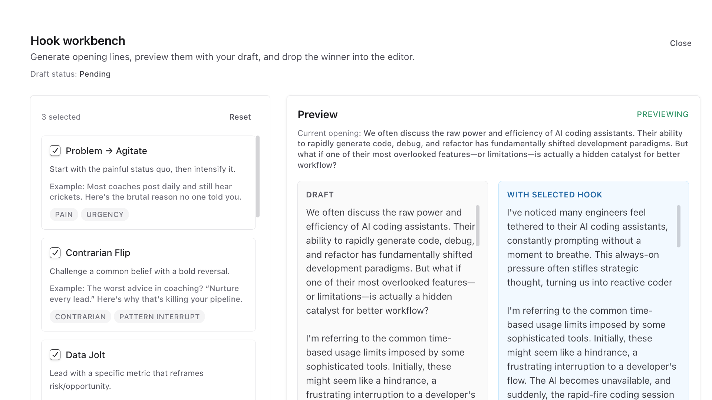
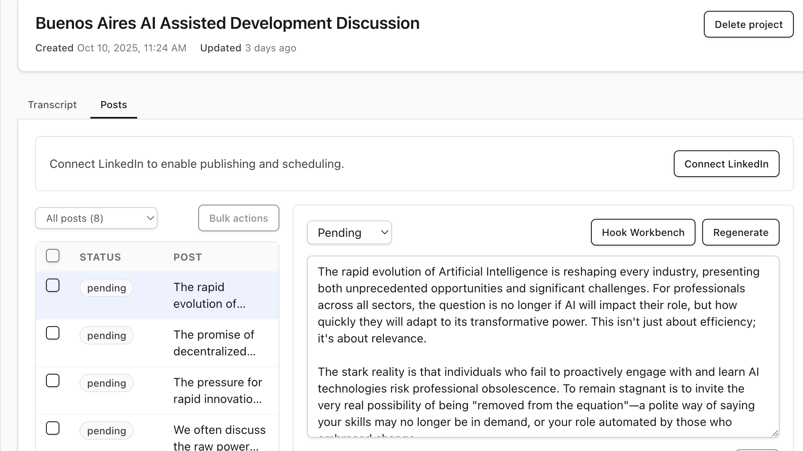

01 / PROBLEM
Transcript backlog
Long transcripts buried good ideas.
Useful moments stayed hard to find.
Transcript source 02:18:44
Recorded discussion
Hours of useful source material, notes, stories, objections, and rough phrasing.
candidate insight
One practical point is worth turning into a post.
The product needs to find the moment before anyone starts writing.
More raw material
Good ideas stay mixed with repeats, side notes, setup, and half-finished thoughts.
moments found08
ready to shape03
02 / BOTTLENECK
Draft queue pending
Raw idea
Good point, but not ready for an audience.
Rough post
Needs stronger opening and cleaner voice.
Reviewed draft
Ready only after someone approves the shape.
voice fit
hook clarity
human review
Manual bottleneck
Drafting posts by hand was slow.
Keeping the voice right took judgment.
03 / SOLUTION
Product workflow
Vox Prismatic turns transcripts into reviewable drafts.
People approve before anything is scheduled.
human-led
reviewable
schedule-ready

04 / WORKFLOW
Workflow steps
The workflow moves in clear steps.
Extract ideas, shape posts, review hooks, schedule.

01Extract ideas
02Shape posts
03Review hooks
04Schedule
05 / USEFUL RESULT
Useful result
The result is a content operations loop.
Long inputs become posts someone can trust.

inputLong transcript
reviewHook and draft approval
outputReviewable post ready to schedule
Vox Prismatic
Reviewable posts from long transcripts.